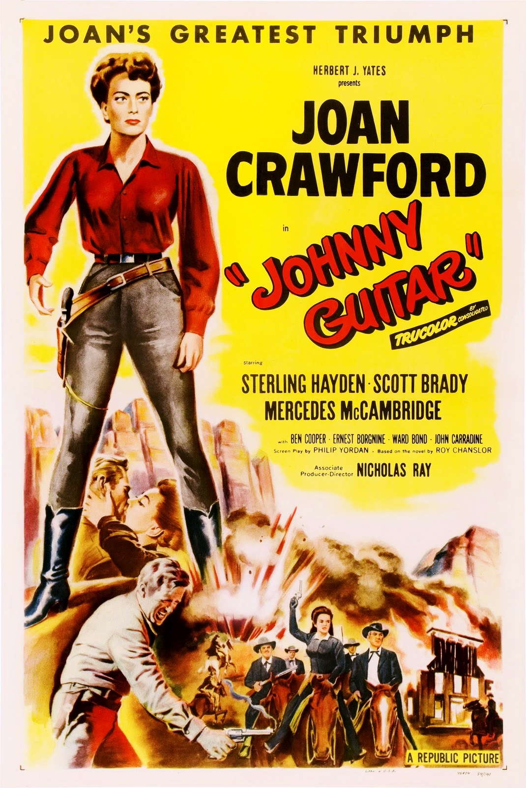

Nicholas Ray
1954
111 minutes
You don't watch many westerns, but you decided to watch this film simply because it is so often hyped and referenced by French New Wave directors and you're curious what the deal is. Aside from that, you didn't know much about it aside from the song being prominent on the Fallout: New Vegas soundtrack.
You find you're off to a great start when you see that Sterling Hayden, one of your favorite American actors, stars in it. Joan Crawford is also in it, and this may finally be the film that drives home the difference between Joan Crawford, Joan Collins, and Elizabeth Taylor.
You would frequently get Joan Collins and Joan Crawford confused because of their similar names. And then once you'd recall that Joan Collins was younger and on nighttime soaps and in Andrew Lloyd Webber musicals, you'd get Joan Crawford confused with Liz Taylor for just being an older brunette.
You always got Joan Collins and Elizabeth Taylor confused since both were frequent tabloid fodder when you were a goofy pre-teen paging through The National Enquirer and The Weekly World News. Liz Taylor was married a bunch of times, as Mad Magazine taught you, and when you were a kid she was plumper and older and had some weird connections to Michael Jackson and Rock Hudson and your mother didn't like her because of some business with Eddie Fisher back in the day.
When you'd grow up and watch better movies, you would discover that Elizabeth Taylor was actually breathtakingly distractingly beautiful in her youth, to the point where you can barely watch a film she's starring in without just lusting after her for the whole film. Joan Collins you remember from Dynasty. She was never your "type", at least until you saw her in her very brief but vital role in Joseph and the Amazing Technicolor Dreamcoat where she plays Potiphar's wife and tries to seduce Donny Osmond. You would have been weak-willed enough to fall for that, admittedly. To be honest, though, it didn't seem that holding out did Joseph much good, aside from maybe spiritually...
Joan Crawford is neither of those. Joan Crawford you know, sadly, from Whatever Happened to Baby Jane and more recently Feud which featured Susan Sarandon and Jessica Lange depicting Bette Davis and Joan Crawford during the making of that film and the aftermath. You feel like you may have been the only straight guy to see this without much coercion (you watched it with your belated wife), even though you've lobbied several of your friends to give it a chance.
This still isn't going to clear things up too much, but it will give you one more data point. Joan Crawford was once young and she was in a western which is named for a male character but she's the protagonist and it has another woman as the antagonist and Joan Crawford wears fucking trousers and kicks ass and generally seems like someone you should rightly be afraid of. As far as the Cahiers du Cinéma crew are concerned, Joan Crawford might as well be wearing a strap-on and buggering Foucault.
Time to choose something different: